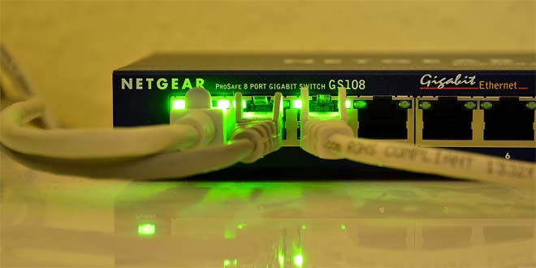
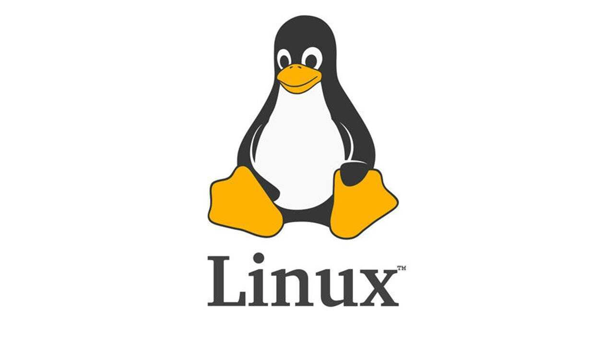
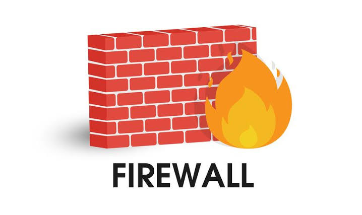
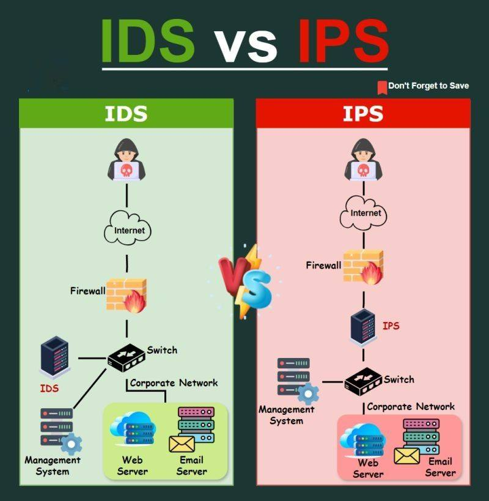
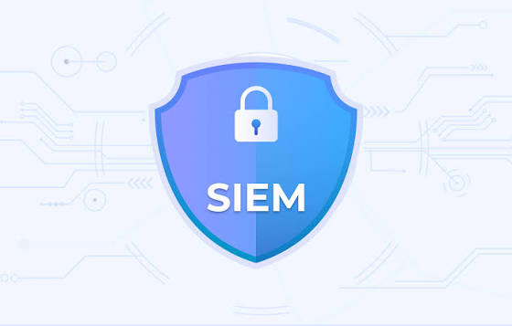

Routing en switching
Ik wil leren hoe netwerken met routers, switches en VLAN's werken.
Bekijk de details over routing en switchingHieronder vind je een overzicht van zes onderwerpen die ik momenteel aan het leren ben en verder wil uitwerken.
Klik op een project voor meer details.

Ik wil leren hoe netwerken met routers, switches en VLAN's werken.
Bekijk de details over routing en switching
Ik wil leren werken met Linux, gebruikers en SSH.
Bekijk de details over Linux-serverbeheerIk wil Python leren gebruiken om taken te automatiseren.
Bekijk de details over Python-automatisering
Ik wil leren hoe firewalls netwerkverkeer beveiligen.
Bekijk de details over firewall en netwerkbeveiliging
Ik wil leren hoe verdachte netwerkactiviteit wordt opgespoord en tegengehouden.
Bekijk de details over IDS en IPS
Ik wil leren hoe ik logbestanden analyseer en incidenten herken.
Bekijk de details over SIEM en loganalyse